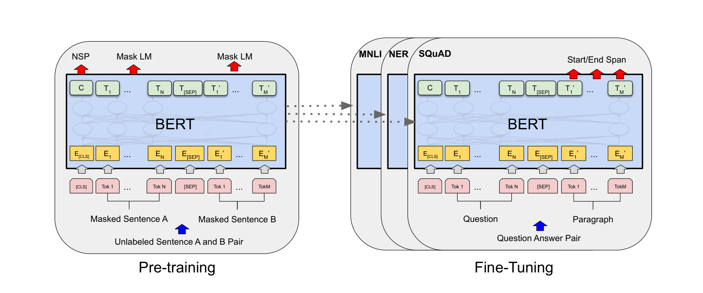
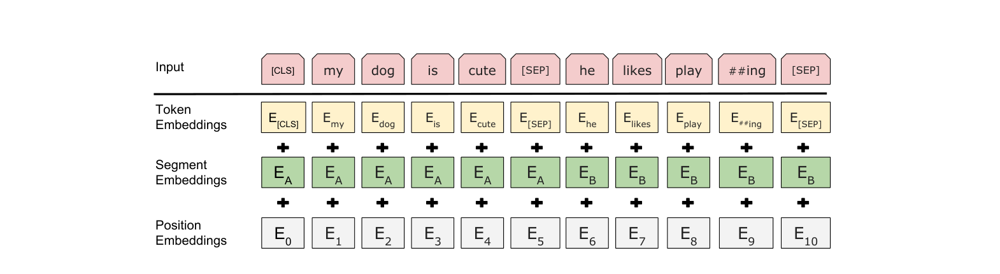
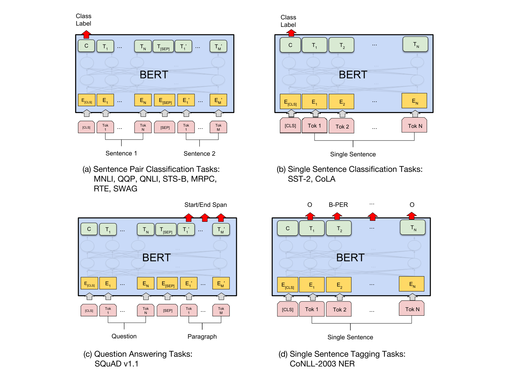
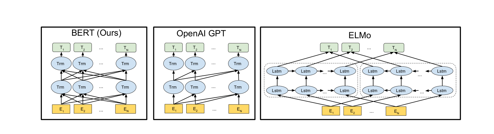

BERT¶
📄 论文链接：arXiv:1810.04805 | PDF
目录¶
核心要点¶
- BERT 是 NLP 领域的里程碑工作：它使得在一个大数据集上训练一个深的神经网络，然后应用到大量 NLP 任务成为可能，既简化了训练又提升了性能，推动了 NLP 领域质的飞跃。
- 核心创新是双向预训练：通过 Masked Language Model（掩码语言模型）实现真正的双向编码，解决了此前 GPT 单向和 ELMo 架构老旧的问题，将 ELMo 的双向思想与 GPT 的 Transformer 架构结合。
- 预训练+微调范式：在无标注数据上预训练两个任务（MLM + Next Sentence Prediction），下游任务只需添加一个输出层即可微调，无需针对任务修改模型架构。
- 大规模实验验证：在 11 个 NLP 任务上取得 SOTA，包括 GLUE、MultiNLI、SQuAD v1.1/v2.0 等，相比之前最好结果有显著提升。
- 开创"大模型+大数据"范式：证明了模型越大效果越好的 scaling law，引发了后续的模型规模竞赛，其影响力远超同期工作 GPT（引用量约为 GPT 的 10 倍）。
1. 背景与动机¶
1.1 BERT 的历史地位¶
- 如果对自然语言处理在过去三年里最重要的文章做排序，BERT 排在第二的位置，很难有另一篇论文能名正言顺地排在第一。
- 在计算机视觉中，很早就能够在大数据集（如 ImageNet）上训练好 CNN 模型，帮助大量 CV 任务提升性能。
- 在 NLP 中，BERT 之前一直没有一个深的神经网络能在训练后帮助一大批 NLP 任务，导致研究者需要为每个任务构造自己的网络并单独训练。
- BERT 的出现使得可以在大数据集上训练一个较深的神经网络，应用于众多 NLP 任务，既简化训练又提升性能。
1.2 标题解读¶
- BERT: Bidirectional Encoder Representations from Transformers（Transformer 的双向编码器表示）。有趣的是这四个词与标题中的用词不完全一致，BERT 这个名字被认为是凑出来的，延续了 ELMo 开创的"芝麻街系列"命名传统（ELMo 和 BERT 都是芝麻街角色名）。
- Pre-training: 在一个数据集上训练好模型，主要目的是用在别的任务上。相对于下游任务的 training，在大数据集上的训练称为 pre-training。
- Deep Bidirectional Transformers: 深层双向 Transformer。Bidirectional（双向）是核心关键词。
- for Language Understanding: Transformer 原本主要用于机器翻译，这里用了更广义的"语言理解"。
1.3 摘要分析¶
第一段：与相关工作的区别
- BERT 设计用于训练深的双向表示，使用无标注数据，联合左右上下文信息。
- 训练好的 BERT 只需加一个额外的输出层就能在很多 NLP 任务上取得不错结果（问答、语言推理等），不需要对任务做很多架构改动。
- 这两句话分别讲清了与 ELMo 和 GPT 的区别：
- vs GPT: GPT 是单向的（用左边上下文预测未来），BERT 是双向的（同时利用左右信息）。
- vs ELMo: ELMo 基于 RNN 架构，用到下游任务时需要调整架构；BERT 基于 Transformer，只需改最上层即可。
- 这种写法值得学习：在摘要第一段就讲清与哪两个工作相关以及区别是什么。
第二段：实验结果
- 概念上更简单，实验上更好。
- 在 11 个 NLP 任务上取得新的最好结果：GLUE、MultiNLI、SQuAD v1.1、SQuAD v2.0 等。
- 报告结果时同时给出绝对精度和相对提升（如 GLUE 提升 7.7%），这是重要的写作技巧：只有绝对精度别人不知道好不好，只有相对提升别人不知道基数是多少。
1.4 引言要点¶
- 预训练在 NLP 中已经流行了一阵子，并非 BERT 首创。BERT 的贡献是让这个方法"出圈"，让后续研究者都跟着使用。
- 使用预训练模型有两类策略：
- 基于特征（Feature-based）：代表作为 ELMo。对每个下游任务构造相关神经网络（RNN 架构），将预训练好的表示作为额外特征与输入一起送入模型。
- 基于微调（Fine-tuning）：代表作为 GPT。将预训练模型放到下游任务时只需少量修改，所有权重在下游数据上继续微调。
- 两类方法在预训练时都使用单向语言模型作为目标函数（给一些词预测下一个词），这是它们的主要局限。
- BERT 的核心想法：标准语言模型是单向的，导致架构选择有局限性。对于句子层面分析（如情感分类）和词元层面任务（如 QA），同时看两个方向的信息应该能提升性能。
1.5 三点贡献¶
- 展示了双向信息的重要性：GPT 只用单向，之前的双向工作只是简单拼接左右语言模型（类似双向 RNN），BERT 的双向应用方式更好。
- 第一个基于微调的模型在一系列 NLP 任务上取得最好成绩：包括句子层面和词元层面的任务，不需要对特定任务做模型改动。
- 代码和模型全部开源。
2. 方法¶

Figure 1: BERT 预训练与微调流程2.1 整体框架：预训练 + 微调¶

Figure 2: BERT 输入表示BERT 包含两个步骤：
- 预训练：在无标注数据上训练模型。
- 微调：使用相同的 BERT 模型，权重初始化为预训练得到的权重，在有标注的下游数据上继续训练。每个下游任务创建一个新的 BERT 模型实例。
注：预训练和微调并非 BERT 独创（CV 中已广泛使用），但作者在论文中仍做了简要介绍，这是好的写作习惯——论文应自洽，不要让读者去查参考文献才能理解基本概念。
图一说明： - 预训练阶段：输入无标注的句子对，训练出 BERT 模型及其权重。 - 微调阶段：对每个下游任务，创建同样的 BERT 模型，用预训练权重初始化，在该任务的有标注数据上继续训练，得到该任务专属的 BERT 版本。
2.2 模型架构¶
BERT 模型是一个多层双向 Transformer 编码器，直接基于原始 Transformer 论文和代码，没有做改动。
三个关键超参数： - L: Transformer 块的个数（层数） - H: 隐藏层大小 - A: 自注意力机制中多头的头数
两个模型规格：
| 模型 | L (层数) | H (隐藏维度) | A (头数) | 可学习参数 |
|---|---|---|---|---|
| BERT-base | 12 | 768 | 12 | ~1.1 亿 |
| BERT-large | 24 | 1024 | 16 | ~3.4 亿 |
- BERT-base 的参数选取使得与 GPT 模型参数量大致相当，便于公平比较。
- BERT-large 用于刷榜。
- BERT-large 的宽度从 768 变为 1024 的原因：模型复杂度与层数成线性关系、与宽度成平方关系。层数翻倍，宽度的平方也应约翻倍。
- 每个头的维度固定为 64，因此 H 增大时头数 A = H/64 也相应增加。
参数量计算公式（Transformer 架构回顾）：
可学习参数主要来自两块：嵌入层和 Transformer 块。
- 嵌入层: 词典大小 × H = 30K × H
- Transformer 块（每层）:
- 自注意力部分：K、V、Q 各有投影矩阵（合并后为 H×H），加上输出投影（H×H），共 4H²
- MLP 部分：两个全连接层（H→4H 和 4H→H），共 8H²
- 每层合计：12H²
- 总参数: 30K × H + L × 12H²
代入验证：BERT-base (H=768, L=12) ≈ 1.1 亿；BERT-large (H=1024, L=24) ≈ 3.4 亿。
2.3 输入表示¶
BERT 的输入既可以是一个句子，也可以是句子对。为了统一处理，定义"序列"的概念。
切词方法：WordPiece
- 如果按空格切词，词典可能达到百万级别，导致可学习参数集中在嵌入层。
- WordPiece 的核心思想：对于出现概率不高的词，将其切开，保留高频的子序列（词根）。这样可以用较小的词典（约 30,000）表示较大的文本。
##前缀表示该片段在原文中紧跟前一个片段（如flightless→flight+##less）。
序列构成：
[CLS] sentence_A [SEP] sentence_B [SEP]
- [CLS]: 特殊分类标记，放在序列开头。其最终输出代表整个序列的信息（用于句子级分类）。由于 Transformer 自注意力机制的特性，即使放在第一个位置也能看到所有后续词。
- [SEP]: 分隔标记，用于区分两个句子。
- Segment Embeddings: 学习的嵌入层，标识每个 token 属于句子 A 还是句子 B（输入大小为 2）。
每个 token 的输入向量 = Token Embedding + Segment Embedding + Position Embedding
- 与 Transformer 不同，BERT 中 Segment Embedding 和 Position Embedding 都是通过学习得到的，而非手动构造。
- Position Embedding 的输入大小为序列最大长度（如 512/1024）。
2.4 预训练任务¶
2.4.1 Masked Language Model (MLM)¶
受 Cloze 任务（完形填空，1953 年论文）启发。
基本做法：随机选择输入序列中 15% 的词元进行掩码，目标函数是预测被掩码的词。与标准从左到右的语言模型不同，MLM 允许同时利用左右上下文信息，从而支持训练深的双向 Transformer。
Mask 策略的细节（解决预训练-微调不一致问题）：
训练时使用 [MASK] 符号，但微调时没有这个符号，会导致预训练和微调看到的数据不一致。解决方案：对被选中掩码的 15% 词元：
- 80% 的概率：替换为 [MASK] 符号
- 10% 的概率：替换为随机词元（引入噪音）
- 10% 的概率：保持不变（与微调时真实数据一致）
示例（附录 A.1）：输入 "my dog is hairy"，选中 "hairy" 做掩码： - 80%: "my dog is [MASK]" - 10%: "my dog is apple" - 10%: "my dog is hairy"（但仍标记为预测目标）
注：特殊的词元（[CLS]、[SEP]）不做替换。若序列长度为 1000，则需预测约 150 个词。
2.4.2 Next Sentence Prediction (NSP)¶
动机：QA 和自然语言推理等任务涉及句子对，需要学习句子层面的信息。
做法：输入序列包含句子 A 和句子 B： - 50% 的概率：B 是原文中 A 的下一句（正例） - 50% 的概率：B 是从其他地方随机选取的句子（负例）
示例（附录 A.1）： - 正例："The man went to the store." + "He bought a gallon of milk." - 负例："The man went to the store." + "Penguins are flightless birds."
实验表明（5.1 节），加入 NSP 能极大提升 QA 和语言推理的效果。
2.5 预训练数据¶
使用两个数据集： - BooksCorpus: 约 8 亿词的书本数据集 - English Wikipedia: 约 25 亿词
强调应使用文本层面的数据集（完整的文章），而非随机打乱的句子，因为 Transformer 能处理较长序列，完整文本效果更好。
2.6 微调方法¶
与编码器-解码器架构的区别：BERT 将整个句子对放在一起输入，self-attention 能在两端之间相互查看。代价是不能像 Transformer 那样做机器翻译等生成任务。
微调的一般流程： - 根据下游任务设计任务相关的输入和输出，模型本身基本不变。 - 如果有两个句子，就是句子 A 和 B；如果只有一个句子，B 为空。 - 根据任务需求，取 [CLS] 的输出做分类，或取对应词元的输出做词级预测。 - 最后加一个输出层 + softmax 得到标签。 - 微调相对便宜：TPU 跑一小时或 GPU 跑几小时即可完成。
3. 实验¶

Figure 4: BERT 在不同下游任务上的微调方式
Figure 3: 预训练架构对比（BERT vs GPT vs ELMo）3.1 GLUE Benchmark（句子级任务）¶
- 包含多个数据集的句子层面任务。
- BERT 取 [CLS] 的最终向量，学习一个输出层 W，用 softmax 做多类分类。
- 结果（表一 Average）：BERT-base 和 BERT-large 均优于 GPT 及之前最好的结果。即使在参数量与 GPT 差不多的情况下，BERT-base 仍有较大提升。
3.2 SQuAD（问答任务）¶
- Stanford Q&A Dataset：给一段话和一个问题，答案在原文中，需找出答案片段的开始和结尾位置。
- 做法：学习两个向量 S 和 E，分别表示每个词元是答案开始/结束的概率。对问题所在句子的每个词元，计算其与 S/E 的点积再 softmax。
- 微调超参数：3 epochs，学习率 5e-5，batch size 32。
注：后来社区发现 BERT 微调结果非常不稳定（方差大），原因是 3 个 epoch 太少，且 BERT 使用的 Adam 是不完全版（AdamW 的前身），在短时间微调时有影响。换回完整版 Adam 并增加训练轮数可解决。
3.3 SQuAD v2.0¶
- SQuAD 的升级版，增加了不可回答的问题。BERT 同样大幅领先。
3.4 SWAG¶
- 判断两个句子之间的关系。BERT 同样显著优于其他方法。
3.5 消融实验（Ablation Studies）¶
5.1 预训练任务的影响： - 去掉 NSP：效果下降，尤其对句子级任务影响较大。 - 使用从左到右的语言模型替代 MLM：效果下降。 - 从左到右 + 双向 LSTM（ELMo 思路）：效果不如 BERT。 - 结论：MLM 和 NSP 都有贡献，去掉任何一个都会打折。
5.2 模型大小的影响： - 模型越大效果越好，与 NLP 社区的共识一致。 - BERT 是第一个展示超大模型对语言模型有显著提升的工作。 - 虽然从现在看 BERT 并不大（GPT-3 已达千亿级），但在当时是开创性的，引发了后续的模型规模竞赛。
5.3 基于特征 vs 微调： - 将 BERT 的特征作为静态特征输入（不做微调），效果不如微调。 - 验证了 BERT 应该使用微调方式使用。
4. 总结¶
4.1 BERT 的核心贡献回顾¶
- 站在巨人肩膀上：BERT = ELMo 的双向思想 + GPT 的 Transformer 架构 + Masked LM 的具体实现。很多工作是 a+b 的组合，只要简单好用、别人愿意用，就是有价值的贡献。
- 双向性是作者强调的最大贡献，但实际上 BERT 的贡献远不止于此。选用编码器（而非解码器）得到了双向的好处，但也失去了生成能力（机器翻译、文本摘要等不方便做）。不过分类问题在 NLP 中更常见，所以 BERT 更受欢迎。
- 完整的深度学习范式：训练一个很深很宽的模型 → 在大数据集上预训练 → 微调应用到各种小数据任务 → 全面提升性能。这满足了深度学习研究者"简单、暴力、效果好"的期望。
4.2 为什么 BERT 成为了经典¶
- BERT 是 ELMo → GPT → BERT 这一系列工作中的一个节点，每个都在用更大的数据集训练更好的模型。
- BERT 的结果确实比 GPT 好一些，但思路非常相似。然而 BERT 的引用量约为 GPT 的 10 倍。
- 可能的原因：BERT 让预训练+微调范式真正"出圈"，提供了更易用的工具和开源代码，且双向编码器更适合当时 NLP 的主流任务（分类为主）。
- 当然，更大模型的好结果的唯一结局是被后面的工作超越，但 BERT 的历史地位已经确立。
4.3 写作启示¶
- 摘要第一段讲清与相关工作的区别，第二段展示结果（绝对精度 + 相对提升）。
- 论文应自洽，即使是公认的概念（如预训练、微调）也应简要介绍。
- 卖一个核心点比面面俱到更容易被人记住，但要说明选择的 trade-off。
- 基于前人工作时，应在相关工作章节对其做适当介绍，方便未读过前作的读者理解。